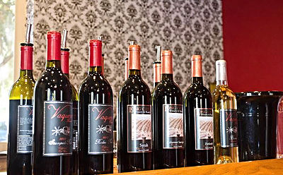

On behalf of Sonora Shores we welcome you to learn about our charming community. From hiking to wine tasting and everything in between, the town of Oroville and surrounding area has something for everyone.
Sonora Shores is a beautiful lakeside community located near the town of Oroville, WA.
The Okanagan region is famous for it's cherry, pear, peach and apricot farms as well as it's numerous apple orchards. The main attraction of the Okanagan for many people, however, is the gorgeous vineyards that blanket the valley.
Oroville is home to a plethora of prestigious vineyards. Each providing a unique wine tasting experience. Click "Learn More" for a list of vineyards in and around Oroville.
An outdoorsmans dream trek or a casual stroll, the Okanagan Valleys hundreds of trails will have what you are looking for.
Enjoy all the gorgeous scenery that the valley has to offer. The euphoric views lend themselves to adventure and relaxation. Stroll lakeside or hike around the surrounding terrain.